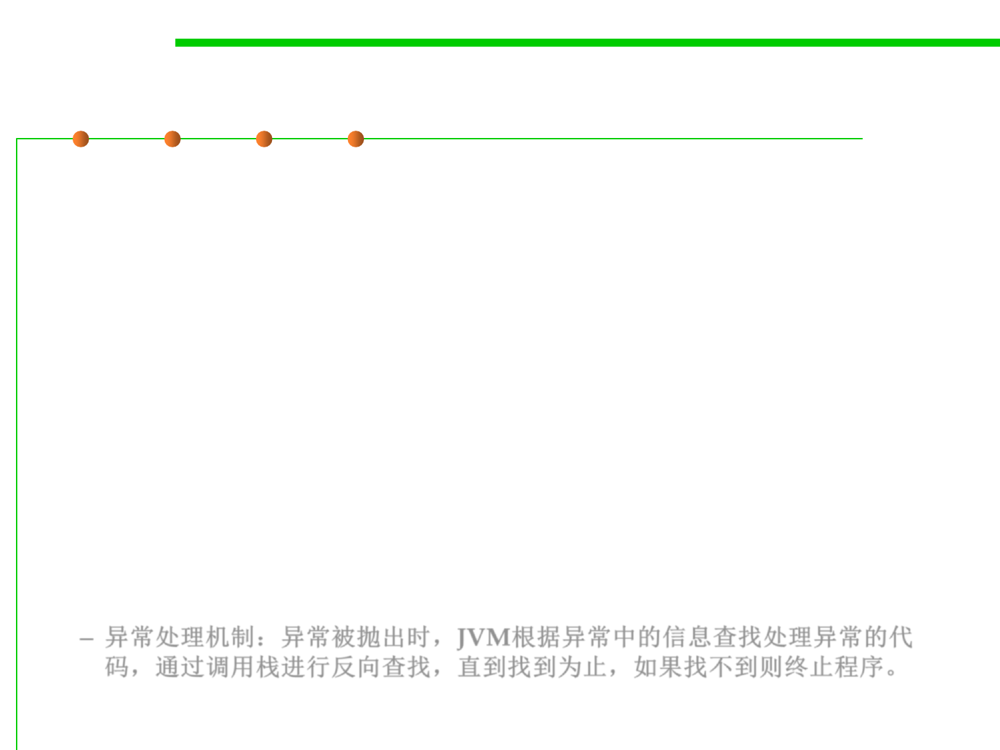

Exception & Call Stack
7.2 Error and Exception Handling
▪ When an exception occurs inside a Java method, the method creates
an Exception object and passes the Exception object to the JVM
(i.e., the method "throw" an Exception).
▪ The Exception object contains the type of the exception, and the
state of the program when the exception occurs.
▪ The JVM is responsible for finding an exception handler to process
the Exception object.
– It searches backward through the call stack until it finds a matching
exception handler for that particular class of Exception object (in Java
term, it is called "catch" the Exception).
– If the JVM cannot find a matching exception handler in all the methods in
the call stack, it terminates the program.
– 异常处理机制：异常被抛出时，JVM根据异常中的信息查找处理异常的代
码，通过调用栈进行反向查找，直到找到为止，如果找不到则终止程序。